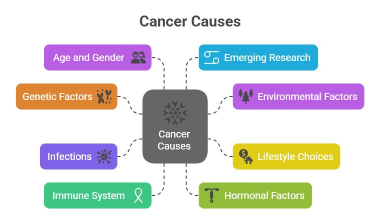

Articles sur le Cancer
Explorez différents articles pour mieux comprendre les types de cancer, leurs causes et les moyens de prévention.
Qu’est-ce que le cancer ?
Le cancer est une maladie caractérisée par la multiplication incontrôlée de cellules anormales dans le corps.
Lire plus
Causes du cancer
Les causes du cancer sont multiples et peuvent être liées à des facteurs internes ou externes.
Lire plusPrévention du cancer
Il existe plusieurs moyens de prévention : alimentation saine, activité physique, dépistages réguliers...
Lire plus